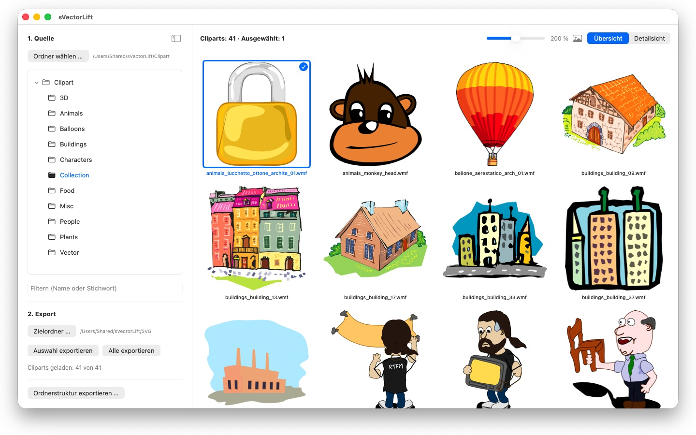
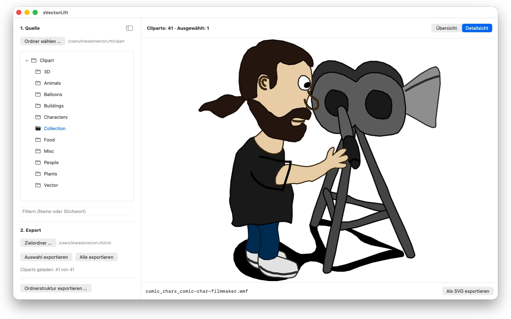

Tausende Cliparts auf alten CorelDRAW-CDs – eingesperrt in Dateiformaten, die niemand mehr öffnet. sVectorLift macht daraus Grafiken, mit denen du heute arbeiten kannst.




Irgendwo im Regal liegt eine CD voller Cliparts, die du einmal gekauft hast. Die Dateien sind noch da – aber kein Programm auf deinem Mac öffnet sie.
24 Sprachen: Deutsch · English · Español · Français · Italiano · Nederlands · Português · Svenska · Norsk · Suomi · Polski · Čeština · Hrvatski · Magyar · Română · Türkçe · Русский · Українська · فارسی · ไทย · 日本語 · 한국어 · 简体中文 · 繁體中文
sVectorLift macht diese Grafiken wieder nutzbar. Es baut jede Zeichnung als echtes SVG neu auf: in jeder Größe scharf, bearbeitbar, direkt verwendbar in Illustrator, Affinity, Inkscape, Sketch, Figma – oder auf deiner Website. Nicht bloß wieder ansehbar. Wieder benutzbar. Dafür steht das „Lift“ im Namen: alte Vektorgrafik, gehoben auf das Niveau der Werkzeuge, mit denen du heute arbeitest.
WELCHE FORMATE
- CorelDRAW-Dokumente (.cdr), Versionen 6 bis 9
- Corel Binary Meta File (.cmx) – auch die alte CDRX-Variante, an der andere Werkzeuge scheitern
- Windows Metafile (.wmf)
- Computer Graphics Metafile (.cgm)
- QuickDraw-3D-Metafiles (.3dm, .3dmf), als Bild gerendert
- Scalable Vector Graphics (.svg), direkt angezeigt
Viele Dateien mit der Endung .cdr sind in Wahrheit gar keine CorelDRAW-Dokumente, sondern CMX – genau daran scheitern die üblichen Konverter. sVectorLift liest beides.
sVectorLift ist für Clipart-Sammlungen gemacht: Zeichnungen, Symbole, Illustrationen. Es ist kein Layoutprogramm und will keine mehrseitigen Broschüren oder Druckvorlagen nachbauen.
ECHTE VEKTORUMWANDLUNG
Hier wird kein Vorschaubildchen abfotografiert. sVectorLift liest die Zeichnung selbst: Pfade und Bézierkurven, Füllfarben, Verläufe, Konturen und Strichmuster, Muster- und Texturfüllungen, eingebettete Fotos und Textobjekte. Heraus kommen echte Vektordaten, die du skalieren, umfärben und bearbeiten kannst – kein Bild einer Zeichnung.
Reine Rasterbilder werden stattdessen als PNG exportiert, damit nichts verloren geht.
Brauchst du statt einer Vektorgrafik ein Bild? „Als PNG exportieren“ und „Als JPG exportieren“ rechnen jede Zeichnung als Bild, auch SVG-Dateien – in der Größe, die du in den Einstellungen festlegst.
DIE SAMMLUNG DURCHSTÖBERN
- Ordnerbaum über die gesamte Clipart-Sammlung, samt Unterordnern
- Kachelübersicht mit scharfen Vektor-Vorschauen, Größe stufenlos regelbar
- Detailsicht – mit den Pfeiltasten durch den Ordner blättern
- Nach Name oder Stichwort filtern
- Mehrfachauswahl wie in der Fotos-App: Klick, ⌘-Klick, ⇧-Klick, Gummiband-Auswahl, ⌘A
- Einzelne Datei direkt aus dem Finder öffnen („Öffnen mit“ oder Doppelklick)
- Zuletzt benutzte Ordner, die sich Unterordner und markierte Datei merken
- Auswahl oder ganzen Ordner in einem Schritt exportieren
- Ganze Ordnerstrukturen samt Unterordnern auf einmal umwandeln – die Struktur bleibt im Zielordner erhalten
- Umbenennen, im Finder zeigen, in den Papierkorb legen
SCHNELL UND SCHONEND
Vorschaubilder werden nur für das berechnet, was du gerade siehst – im Hintergrund und mit Zwischenspeicher. Große Ordner öffnen sich sofort, statt erst einmal minutenlang Tausende Dateien zu verarbeiten.
Alles bleibt auf deinem Mac. Keine Netzwerkverbindungen, keine Konten, keine Datenerhebung.
CorelDRAW ist eine Marke der Corel Corporation. sVectorLift ist ein unabhängiges Programm und steht in keiner Verbindung zu Corel.
- Erfordert macOS 14 oder neuer
- 24 Sprachen
- Support: SwiftAppsBavaria@gmx.net
Weitere Apps
sCollect
Musik, Filme, Hörbücher, E-Books und andere Sammlungen in einer Mediathek ordnen.
sCollectPlay
Der Player zur Mediathek: Musik, Filme, Hörbücher und Podcasts einfach aus einem Ordner, aus einer iTunes-XML oder aus einer sCollect-Mediathek abspielen.
sCollectPlay Lite
Die schlanke Ausgabe von sCollectPlay: einfach einen Ordner, eine iTunes-XML oder eine sCollect-Mediathek öffnen und daraus Musik, Filme, Hörbücher und Podcasts abspielen — mit Wiedergabelisten, Ton- und Untertitelspuren, Zeitlupe und Einzelbildschritt. Es ist immer eine Quelle zur Zeit geöffnet. Spaltenbrowser, eigene Wiedergabelisten und die Liste der zuletzt benutzten Quellen gibt es nur in der Vollversion.
sName2Date
Das Datum aus dem Dateinamen als Aufnahmedatum in Fotos, Filme und Tonaufnahmen schreiben — damit sich eine Datei wie IMG_20240115_103000.jpg in jeder Fotoverwaltung richtig einsortiert.
sName2Date Lite
Die Ausgabe für eine Datei je Durchgang: das Datum aus dem Dateinamen als Aufnahmedatum in ein Foto, einen Film oder eine Tonaufnahme schreiben, von Hand setzen, den Namen in die ISO-Schreibweise bringen und alles mit ⌘Z zurücknehmen — dieselben Fähigkeiten wie sName2Date, nur ohne ganze Ordner.
SwiftRename
Von der Speicherkarte ins Archiv: Fotos und Videos nach Aufnahmezeit benennen, nach Jahr, Monat oder Tag ablegen, Duplikate erkennen — auch bei RAW.
sBikeBridge
Radtouren auswerten, ohne sie in ein Portal hochzuladen: FIT-Dateien jedes Radcomputers einlesen, der in diesem Format aufzeichnet, dazu GPX und TCX. Die Touren liegen in einer eigenen Bibliothek auf dem Mac — mit Karte, Leistung und Herzfrequenz, Fotos und Notizen; Dubletten erkennt der Import. Kennzahlen je Jahr oder Monat und Filter nach Strecke, Höhenmetern und Dauer machen Touren vergleichbar. Die Karte gibt es auf Wunsch auch offline.